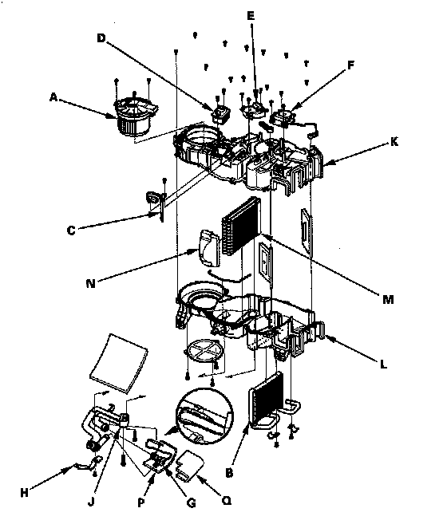

Rear HVAC Unit Component Replacement
Rear HVAC Unit Component ReplacementSRS components are located in this area. Review the SRS component locations, and the precautions and procedures before doing repairs or service.
NOTE: The rear blower motor (A), the rear heater core (B), the rear evaporator sensor (C), the rear power transistor (D), the rear air mix control motor (E), the rear mode control motor (F), and the rear expansion valve (G) can be replaced without removing the rear HVAC unit.

1. Remove the self-tapping screw and the rear evaporator sensor. Remove the self-tapping screw and the clamp (H), then remove the bolts and the rear evaporator lines (J) with the rear expansion valve. If necessary, remove the rear expansion valve. Use a second wrench to hold the other fitting on the valve so the rear evaporator lines won't twist. Leave the first fitting loosely connected so you can use it to hold the valve while you loosen the second fitting.
2. If necessary, remove the rear blower motor, the rear heater core, the rear power transistor, the rear air mix control motor, and the rear mode control motor.
3. Remove the self-tapping screws, and carefully separate the left housing (K) from the right housing (L). Remove the rear evaporator core (M) and plate (N).
4. Reassemble the unit in the reverse order of disassembly, and note these items;
- Replace all O-rings with new ones at each fitting and apply a thin coat of refrigerant oil before installing them. Be sure to use the correct O-rings for HFC-134a (R-134a) to avoid leakage.
- Immediately after using the oil, reinstall the cap on the container, and seal it to avoid moisture absorption.
- Make sure no air is leaking from the left upper housing and the right upper housing fitting and from the upper housings and the lower housing fitting.
- Install the capillary tube (P) directly against the outlet line, and wrap it with electrical tape (Q).
- Before reassembly, make sure that the rear air mix control linkage and door move smoothly without binding.
- Before reassembly, make sure that the rear mode control linkage and door move smoothly without binding.
- After reassembly, make sure the rear air mix control motor runs smoothly.
- After reassembly, make sure the rear mode control motor runs smoothly.
- Make sure that there is no coolant leakage.